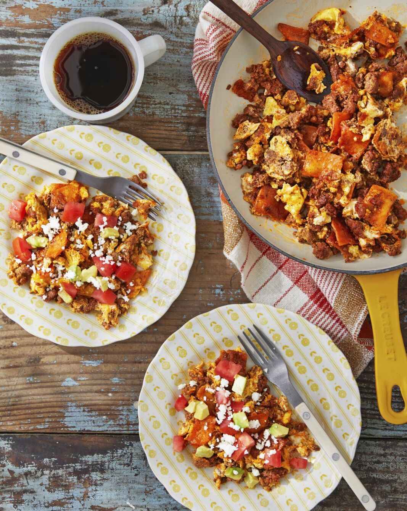

Migas with Chorizo

While we love practically any kind of breakfast,
there's a special place in our hearts for this Mexican-style scrambled egg dish.
Migas, which means "crumbs" in Spanish, is a dish of leftovers.
Take a few of the tortillas you didn't use for last night's tacos,
and mix them with a bit of the leftover chorizo. Scramble in some eggs, and top them with whatever
toppings you still have on hand.
Ingredients
- 8 oz. fresh chorizo, casings removed
- 1 tbsp. oil
- 2 corn tortillas, torn or cut into strips
- 4 eggs, well beaten
Steps
- Cook chorizo in a large skillet over medium heat, breaking it into pieces,
until browned and cooked through,
5 to 7 minutes. Remove chorizo, with a slotted spoon, reserving oil.
Add 1 tablespoon oil (you want about 2 tablespoons total in the skillet) and tortillas to skillet.
Cook, without stirring, until crispy, 3 to 4 minutes.
-
Return chorizo to skillet. Add eggs and season with salt and pepper. As eggs begin to set,
scrape mixture into center of pan with a heatproof spatula
-
Just before eggs are fully cooked, remove pan from heat. Divide mixture among 4 plates,
and garnish with avocado, tomatoes, and sour cream or queso, dividing evenly. Serve immediately.